通用伺服控制介绍
1. 伺服控制环路
- 位置环P控制器，速度环PI控制器，电流环PI控制器
- 速度前馈和加速度前馈
- 位置指令整形
- 转矩指令滤波，陷波，双二阶滤波器
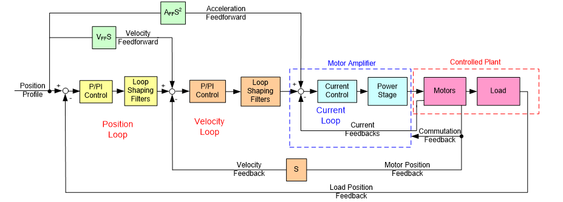
2. PPI环路控制
对于带前馈的PPI控制器。
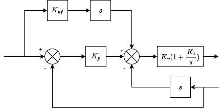
可以转化为：
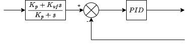
也就是说将整个位置环当成一个滤波器和一个PID控制器。
PID控制器化简如下：
从上式可以看出在PID中$K_p$与$K_i$的地位相同。不同的是，在预滤波中，当无前馈时，相当于加上了一个带宽为$K_p$的低通滤波器。
转矩指令滤波时间$K_t$相比于电气时间常数很大，主要是用来压制高频噪声。
3. 标准刚性表（单惯量模型）
刚性描述的是力与运动的关系，刚性越高，由运动偏差产生的力越大，系统响应越快，但也更容易超调甚至不稳定。
工控行业往往需要的是极限性能，即在保证稳定性和少抖动的前提下尽量提高系统带宽。
伺服的刚性表包含四个参数：位置环增益、速度环增益、速度环积分、转矩滤波时间常数。
在惯量比设置正确的前提下，速度环增益表征速度环带宽，位置环增益表征位置环带宽，转矩滤波时间常数表征电流环带宽。在分析外环时将内环简化为一阶系统。
参数关系如下：
- 每个刚性等级有一个速度环增益（带宽）与之对应，表征由速度偏差产生力的能力。
- 速度环积分与速度环增益保持固定的阻尼比
位置环增益与速度环增益保持固定的阻尼比
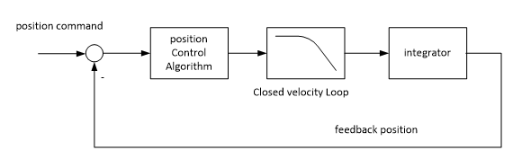
转矩指令滤波与速度环增益保持固定的阻尼比
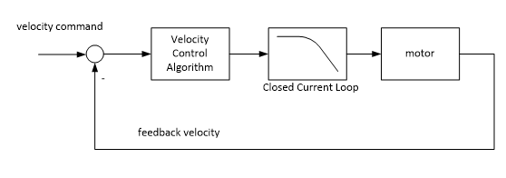
4. 共振抑制
下图是双惯量模型，是分析共振的最简化模型。
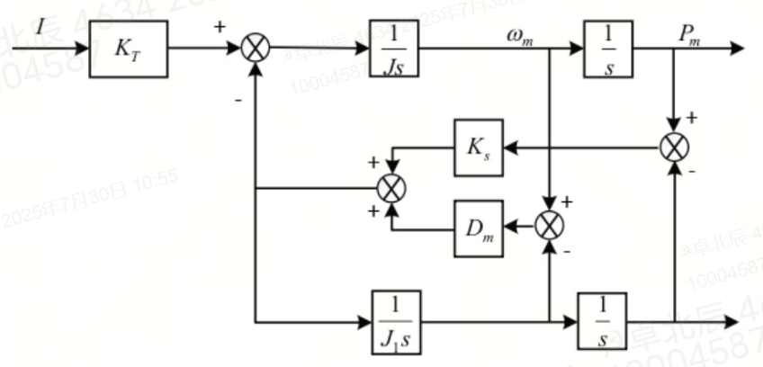
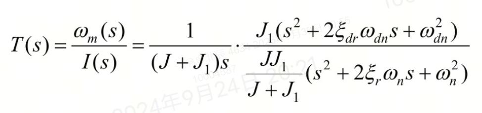
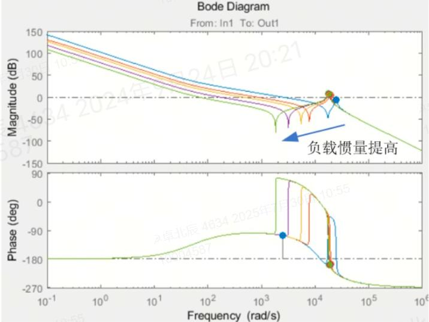
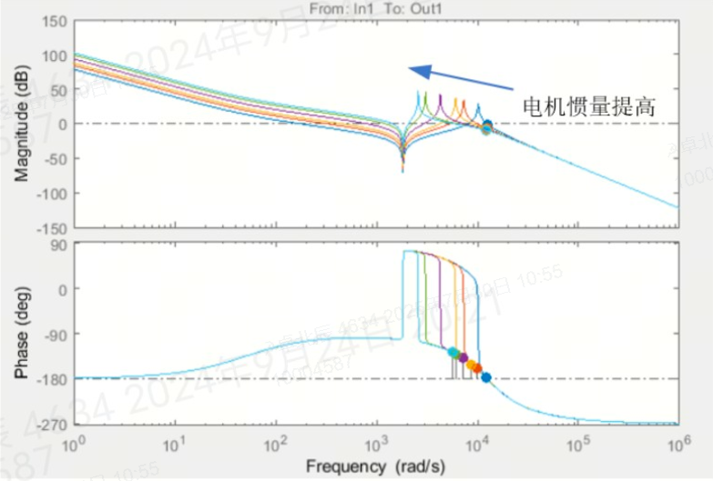
4.1 陷波器
伺服中使用的陷波器为双二阶形式：
其中
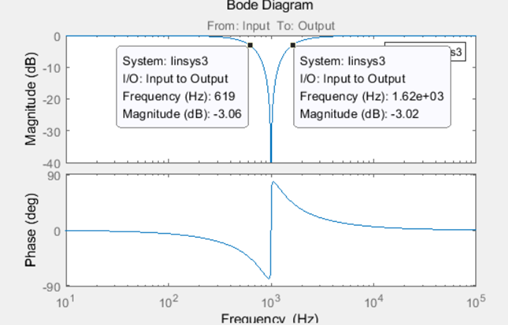
伺服中在电流指令处有4组陷波器用于抑制高频振动，在位置指令处有位置指令陷波用于抑制低频共振（末端低频抑制2,3）。
4.2 指令整形（Input Shaping）
指令整形用于消除低频的残余振动。基本原理是将指令分多次下发，产生的多个不同相位的残余振动，最终相互抵消。（末端低频抑制1）
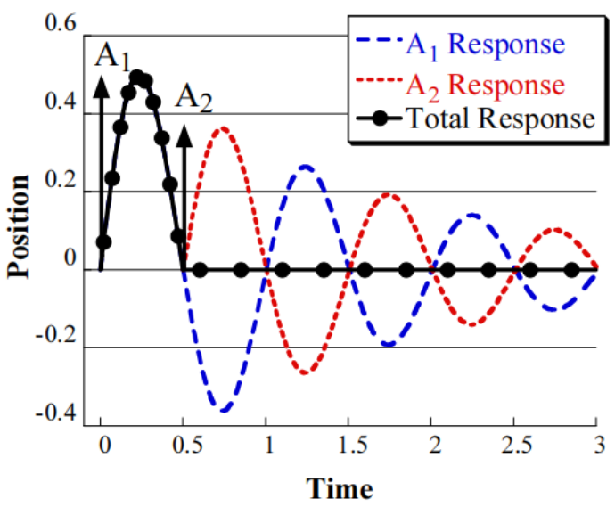
4.3 主动阻尼
4.3.1 速度补偿
系统阻尼过小是导致谐振的另一个原因，因此，增大系统阻尼也可以有效改善系统谐振问题。系统阻尼对速度做出反应，阻碍速度变化，可以将其看作一种基于速度的负反馈。 首先提取出速度信号中的抖动分量，然后将其反馈到指令信号中 。（中低频抑制2）
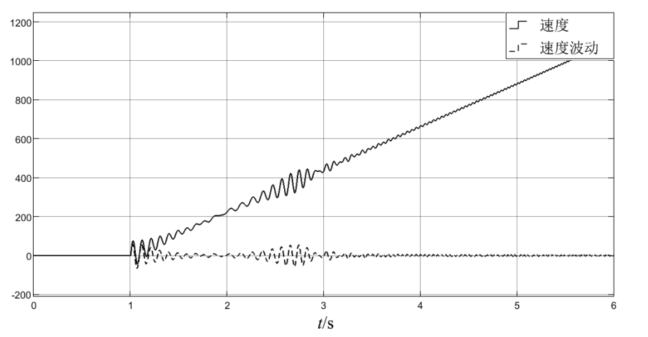
4.3.2 转矩补偿（扰动观测器）
此外，还有另外一种补偿转矩的主动阻尼方式，属于扰动观测器。
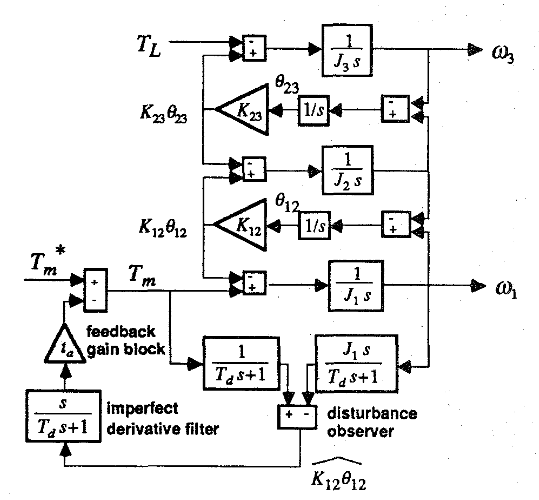
4.4 等效惯量
等效惯量是加速度龙伯格观测器，通过引入加速度反馈的方式来等效地增大电机转动惯量，振动频率略微降低，阻尼提高。（伺服没有使用）
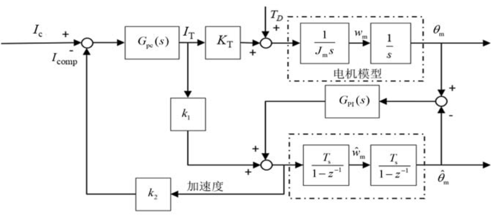
5. 汇川ETUNE调谐
ETUNE是基于时域指标的离线自调谐。离线指调谐过程在非工况下，需要运行固定的梯形加减速轨迹。
ETUNE关注阶跃（梯形加减速）超调量，振铃（调整时间）和系统振动三个指标。系统振动由单独的模块持续监控，幅值阈值可由功能码设置。
总体调谐流程如下：
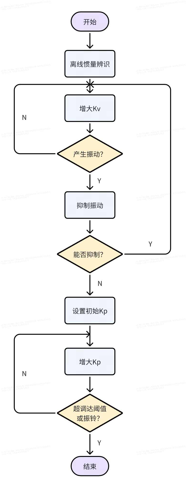
6. 汇川STUNE调谐
与ETUNE不同，STUNE是在线调谐，即直接在工况条件下自调谐。STUNE使用刚性表进行调谐，而不是由内环向外环调谐。在调谐一段时间后（几分钟），自动退出STUNE。
调谐时先进行在线惯量辨识，然后不断拉高刚性等级直到用户期望刚性，如果过程中发生振动，则结束调谐。
6.1 模式1——基本刚性表
采用刚性表。
6.2 模式2——增益切换
刚性表+增益切换
运行时，定位时，空闲时采用三组不同增益参数（一般定位和空闲时相同）以减少定位时间。
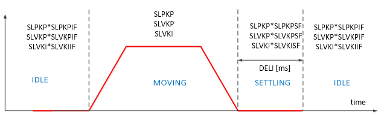
6.3 模式3——插补模式
插补模式下开启PDFF控制，提高低频抗干扰能力。
6.3.1 PDFF
被称为具有前馈伪微分反馈控制器，本质是一个二自由度的PI控制器，能够减少系统超调量，但会损失响应性能。
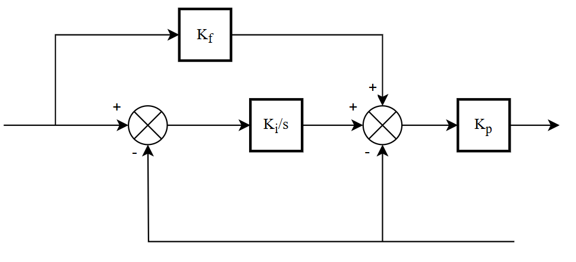
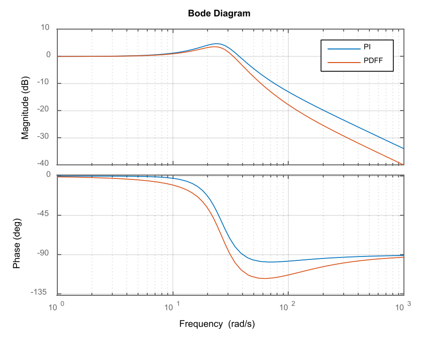
6.4 模式4——普通模式
不开其他功能，只按照刚性表调节。
6.5 模式6——快速定位模式
开启模型跟踪控制，起到指令整形作用，减少定位时间。
6.5.1 模型跟踪控制
在设定指令输入参考模型后， 会获得理想无滞后的响应结果。 即使设定指令为阶跃位置信号等极端不合理的指令， 经过参考模型处理后的模型输出也符合理想的物理规律， 具有指令整形的效果。 相较于原始的设定指令，实际系统以参考模型输出为指令， 更符合其物理特性， 也更容易实现跟随。
（本质是让实际模型跟随理想模型的各阶状态）
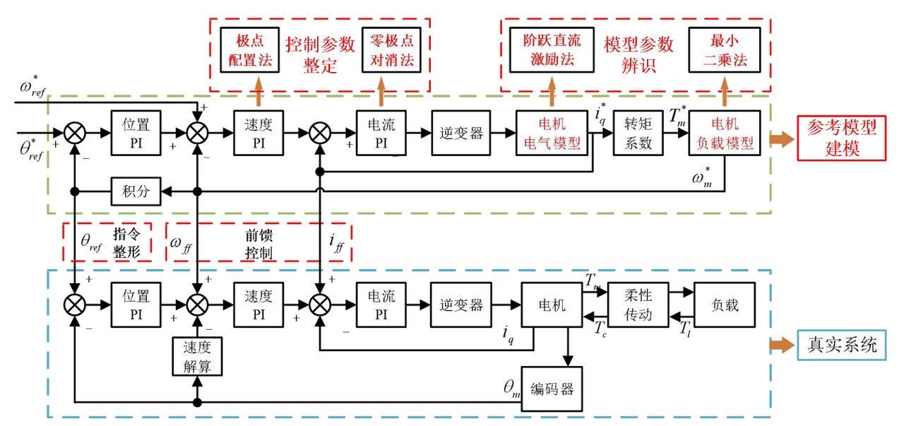
7. 汇川高性能调谐
高性能调谐是基于频域的调谐，首先注入电流指令获得被控对象的机械特性（转矩指令输入，速度输出，包括电流环和被控对象）Bode图。然后通过仿真的方式查找一组合适的参数，使最终的系统性能满足给定的幅值裕度和相位裕度。
目前该功能只作为扫频功能使用，自调谐功能未开放。
8. 基于频域指标评分的自调谐
自调谐首先要确定调谐的标准，即如何评价系统的好坏。
目前汇川伺服使用的所有算法都是在满足某种时域或频域指标的前提下，使得系统带宽尽可能大。
欧系产品自调谐算法很多是基于评分的自调谐算法，好处是能够兼顾多种指标，使各项性能达到较好的平衡。
8.1 Kollmorgen自调谐介绍（反编译得到）
8.1.1 PIV环路控制
默认100%速度前馈，认为整体是PID控制器
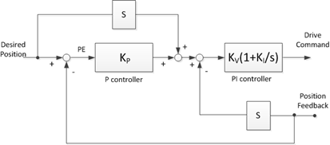
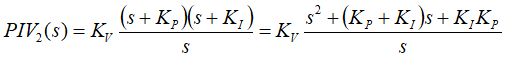
8.1.2 调谐参数
- VLKP（Kv）：速度环增益
- VLKI（Ki）：速度环积分
- PLKP（Kp）：位置环增益
- LPFrequency：转矩指令滤波
- Biquad1：第一组双二阶滤波器（可以配置成LowPass、LeadLag、Resonator、Customer）
8.1.3 评分标准
- VLKICost：速度环积分的倒数，期望速度环积分大
- PLKPCost：位置环增益的倒数，期望位置环增益大
- LPFrequencyCost：转矩指令滤波频率的千分之一，期望转矩滤波截止频率低
- StabilityCost：距稳定椭圆（综合相位裕度和幅值裕度）的距离（在椭圆内直接结束调谐，认为裕度不足），期望稳定性好
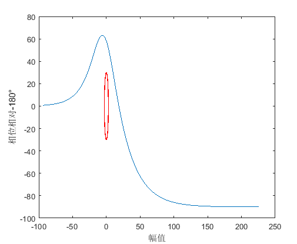
1 | StabilityCostSum += (Frequencies[i] - Frequencies[i-1]) |
- BandWidthCost：与相同带宽，阻尼比为0.707的二阶系统的相似程度，期望系统响应接近最优阻尼比二阶系统
总评分为这5个指标的加权和，分数越少代表参数越优。
1 | if (ActualAmp < StandardAmp) |
8.1.4 调谐过程
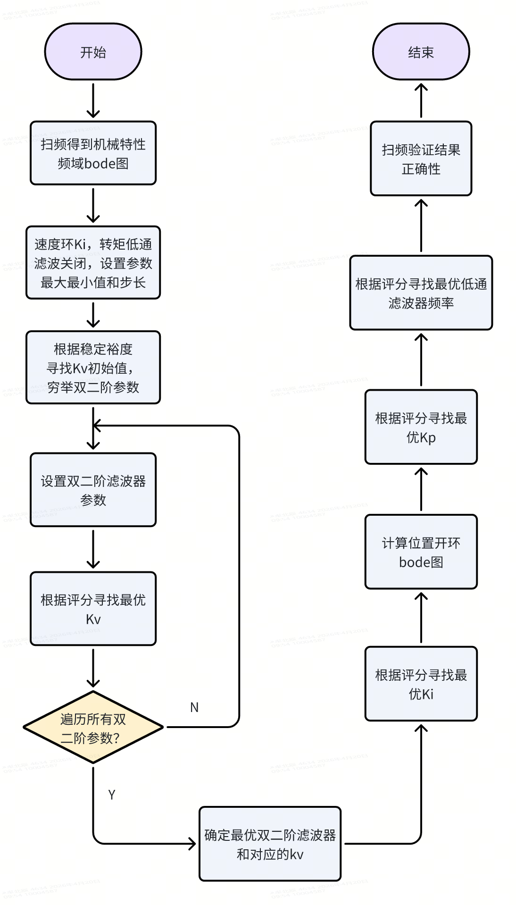
9. Kuka PPI调谐文档分析
9.1.1 关键术语
- PPI optimization：位置增益，速度增益，速度积分优化。关注的是每个轴的底层电机行为。
- EKO optimization：（End-effector Kinematics Optimization）末端执行器运动学优化。关注的是整个机器人的运动表现。(Elastische Kompensation Optimierung)柔性补偿
- PPI optimization ->EKO optimization->PPI optimization :在机器人调试中，单轴级别控制器参数（PPI）优化虽然重要，但不能保证整机性能；通过全局末端行为优化（EKO），可以揭示更多细节问题，因此需要再次返回轴级重新调优（PPI）。
9.1.2 可能的指标
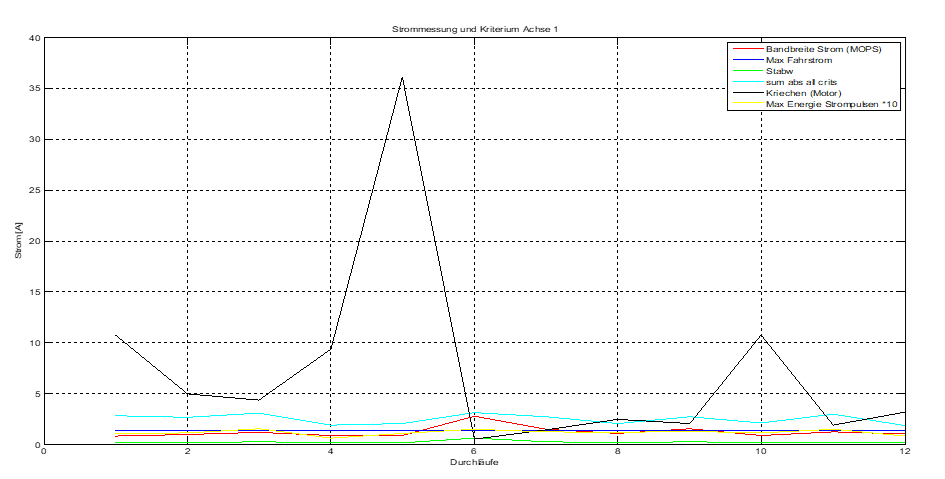
- Bandbreite Strom (MOPS) 电流带宽（MOPS = Motor Optimization Performance System）
- Max Fahrstrom最大驱动电流
- Stabw标准差 (Standardabweichung)
- sum abs all crits 所有评价指标的绝对值之和
- Kriechen (Motor) 电机爬行
Max Energie Strompulsen*10 最大电流脉冲能量 ×10
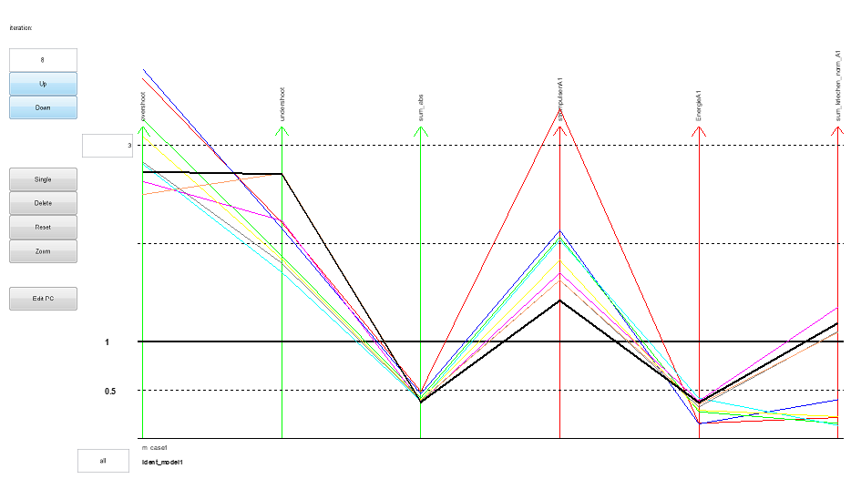
Overshoot：超调量
- Undershoot：负调量
- sum_abs：绝对误差总和
- StormpulsenA1：A1轴电流脉冲
- EnergieA1：A1轴能量
- sum_kriechen_norm_A1：A1轴归一化爬行和